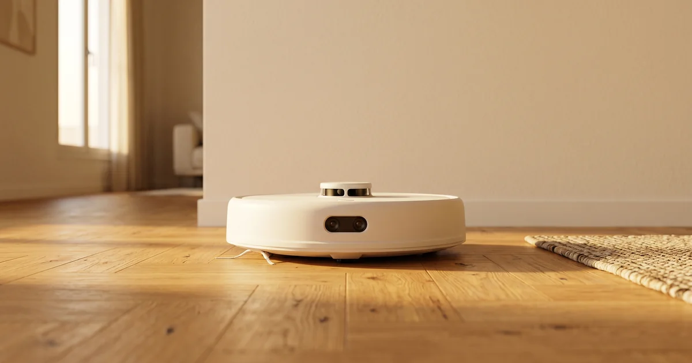
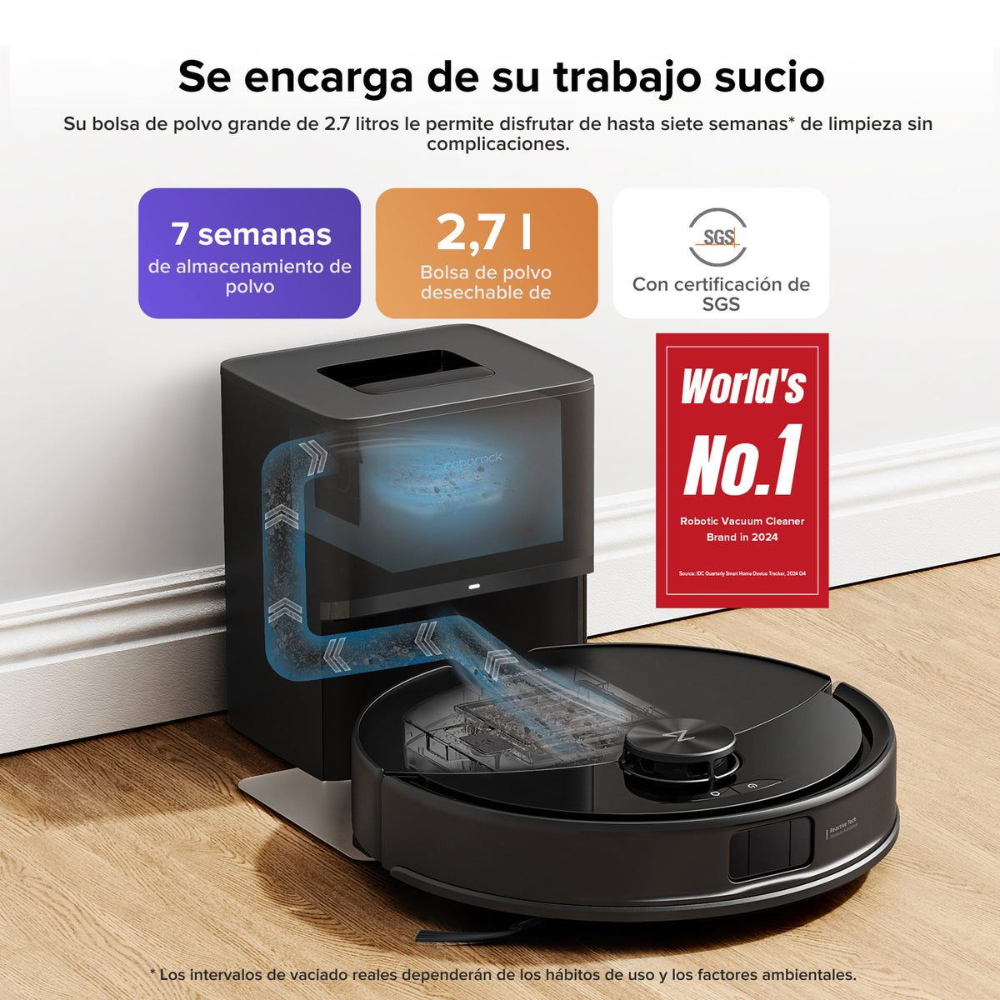
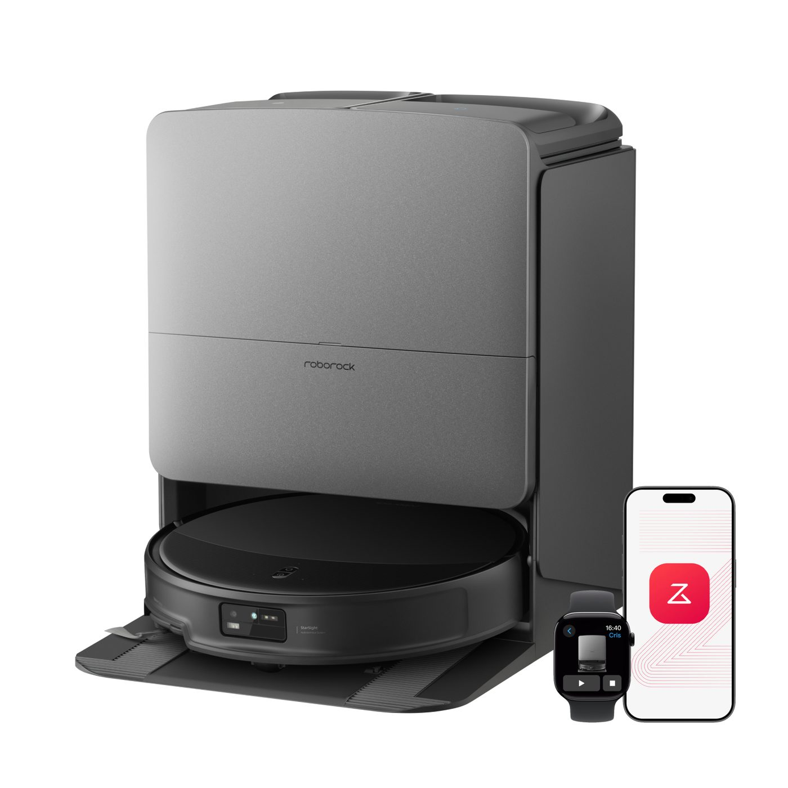
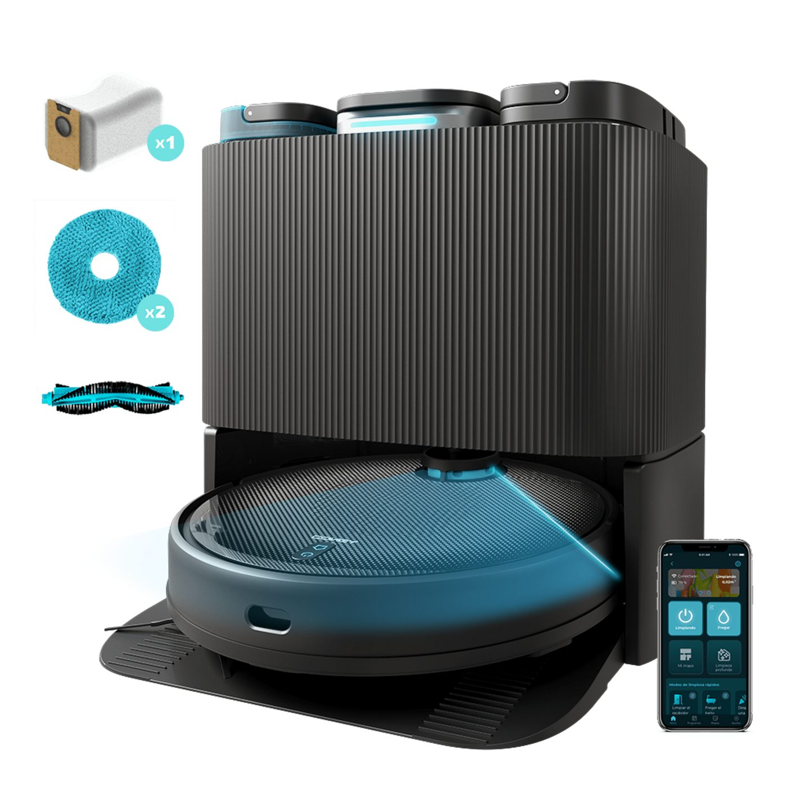
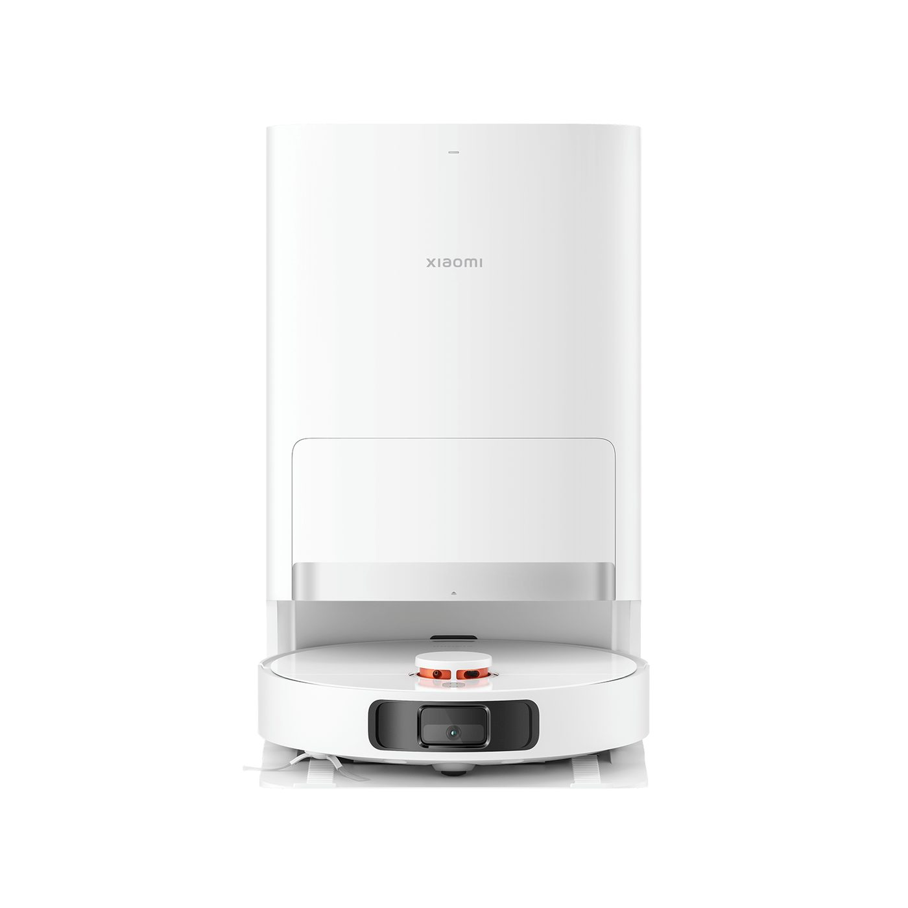
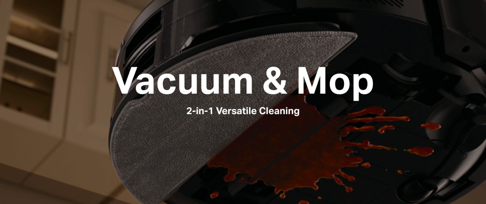
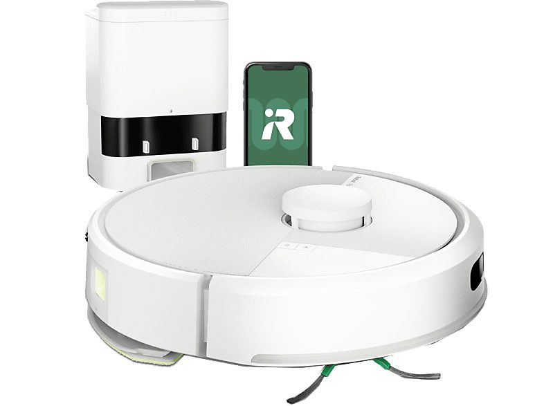

6 aspiradores por menos de 300 €, 3 perfiles de comprador y un cuadro qué-sí qué-no que separa lo barato de lo cutre antes de que te lleves el disgusto.
💡 Recomendación IA: v1 (stat impactante). Motivo: el dato concreto del segmento (más de la mitad de las ventas en España son sub-300 €) ancla la tesis del artículo —"este tramo es serio en 2026"— en el primer párrafo y obliga al lector a recolocar lo que pensaba sobre "barato". v2 funciona como reframe pero abre defendiendo y arranca débil; v3 es la alternativa más fuerte pero el frame "destrucción de creencia" lo usamos en el artículo de mascotas y repetirlo en evergreens consecutivos satura.
[HOOK v1 · Stat impactante]
Más de la mitad de los robots aspirador que se vendieron en España en 2025 costaron menos de 300 €, según informes de mercado de Statista. El otro dato: la mayoría de las comparativas top de prensa tech ES siguen abriendo con modelos de 1.200 €. Ahí está el agujero — y ahí va este artículo.
[HOOK v2 · Reframe violento]
Olvida los listicles "Top 10 robots aspirador baratos". La mitad son ofertas flash de marcas que mañana no encuentras, y la otra mitad mete a Roborock junto a una marca china sin distribución peninsular como si compitieran. En 2026 solo seis modelos por menos de 300 € pasan un filtro serio en España. Aquí están — y aquí está el cuadro de expectativas que separa el "barato bueno" del "barato cutre".
[HOOK v3 · Belief destruction]
"Por menos de 300 € te llevas un juguete". Eso era cierto en 2020. En 2026 hay seis modelos sub-300 € con LiDAR (sensor láser de 360° que mapea la casa), navegación inteligente y soporte oficial peninsular. La diferencia con la gama alta sigue existiendo —no esperes estación todo-en-uno ni rodillo antienredos serio— pero ya no es la diferencia entre "aspira" y "se atasca".
Esta guía es para el comprador español que no quiere gastar más de 300 € en su primer (o segundo) robot aspirador en abril de 2026. Hemos cruzado las fichas oficiales, las reviews internacionales del último año (Vacuum Wars, Xataka Home, TechRadar) y la distribución real en Amazon.es, MediaMarkt, El Corte Inglés y tiendas oficiales de cada marca. No incluimos ningún modelo que hoy no se venda en tiendas peninsulares con garantía. Y no cobramos por colocar marcas: los enlaces de afiliado, cuando existan, se activan después de elegir, no antes.

Los 6 robots aspirador por menos de 300 € que merecen la pena en España 2026. Composición ROBOHOGAR.
📋 Snippet 1 · Banner Hoja de Compra · posición intro
En Beehiiv: escribe /html → selecciona "Custom HTML block" → pega el código de abajo.
<div style="margin:32px 0;padding:28px 24px;background:#283642;border-radius:10px;color:#FFFFFF;font-family:'Inter',-apple-system,BlinkMacSystemFont,Roboto,sans-serif;text-align:center;">
<div style="color:#F5A623;font-family:'DM Sans',sans-serif;font-size:11px;font-weight:700;letter-spacing:1.5px;text-transform:uppercase;margin-bottom:8px;">Checklist · 10 preguntas · 2 páginas</div>
<div style="font-family:'DM Sans',sans-serif;font-size:22px;font-weight:700;color:#FFFFFF;line-height:1.25;margin-bottom:18px;">Las 10 preguntas clave antes de comprar un aspirador para no llevarte un disgusto</div>
<a href="https://robohogar.com/products/hoja-de-compra?utm_source=mejor-robot-aspirador-barato-2026&utm_medium=banner&utm_campaign=hoja-compra" style="display:inline-block;background:#F5A623;color:#FFFFFF !important;padding:14px 26px;border-radius:8px;font-weight:700;text-decoration:none;font-size:15px;font-family:'DM Sans',sans-serif;">Enviádmelo al correo</a>
<p style="margin:14px 0 0;font-size:13px;color:rgba(255,255,255,0.65);line-height:1.5;">PDF gratis con tu suscripción semanal. Cancela cuando quieras.</p>
</div>Hace cuatro años el robot aspirador medio por menos de 300 € navegaba a ciegas. Daba topetazos contra la pata del sofá, terminaba debajo del armario y no sabías cuándo iba a salir. La diferencia entre lo barato y lo bueno era la diferencia entre tener un robot o tener una pelota mecánica.
Lo que ha cambiado en 2026 es la presión competitiva. Tres marcas chinas —Roborock, Xiaomi y Dreame— han bajado el LiDAR (el sensor láser de 360° que crea un mapa real de la casa) hasta el tramo sub-200 € en sus gamas de entrada. Cecotec, valenciana, ha respondido subiendo la potencia y bajando el precio en su línea Conga. TP-Link ha entrado por abajo con su submarca Tapo. Y iRobot, dueño histórico del nombre Roomba, ha empezado a meter modelos sub-300 € que hace dos años habrían sido impensables en su catálogo.
Resultado: el "barato" de 2026 es lo que era la gama media de 2022. Mapea, esquiva muebles, distingue habitaciones y se programa por app. El comprador con presupuesto contenido ya no está condenado al robot tonto — está eligiendo entre seis modelos serios y siete u ocho que aparentan serlo y conviene no comprar.
El problema es que el ruido en el segmento es enorme. En 2022 había tres marcas a tener en cuenta. Hoy hay treinta y la mitad son etiquetas que duran seis meses en Amazon antes de desaparecer. Por eso este artículo no abre con un Top 10: abre con un cuadro de expectativas, sigue con seis modelos defendibles y termina en cuatro errores que vemos repetir cada semana en foros y reviews.
El motivo por el que tanta gente devuelve su robot barato no es que el robot sea malo: es que esperaban algo que en este tramo no existe todavía. Antes de mirar modelos, asume las cinco cosas que sí están y las cinco que no.
✅ Sí esperar bajo 300 €
🚫 No esperar bajo 300 €
📋 Snippet 2 · Cuadro qué-sí qué-no · 5 expectativas
En Beehiiv: escribe /html → selecciona "Custom HTML block" → pega el código de abajo. Estilos inline compatibles con móvil y email; no depende del CSS global del borrador.
<div style="margin:24px 0;font-family:'Inter',-apple-system,BlinkMacSystemFont,Roboto,sans-serif;">
<div style="background:#FFF9EF;border:1px solid #F5A623;border-radius:10px;padding:16px 18px;margin:0 0 16px;">
<div style="font-family:'DM Sans',sans-serif;font-size:13px;font-weight:700;color:#F5A623;text-transform:uppercase;letter-spacing:1.2px;margin:0 0 12px;padding-bottom:8px;border-bottom:1px solid rgba(245,166,35,0.3);">✅ Sí esperar bajo 300 €</div>
<ul style="margin:0;padding-left:20px;color:#0C0C0C;">
<li style="margin:8px 0;font-size:15px;line-height:1.4;">Navegación por LiDAR funcional con mapa de la casa, zonas no-go y limpieza por habitación.</li>
<li style="margin:8px 0;font-size:15px;line-height:1.4;">App en castellano con Roborock, Xiaomi, Eufy y Cecotec; actualizaciones de software durante 2-3 años.</li>
<li style="margin:8px 0;font-size:15px;line-height:1.4;">Succión declarada de 4.000 a 11.000 Pa según marca, suficiente para piso medio sin alfombras gruesas.</li>
<li style="margin:8px 0;font-size:15px;line-height:1.4;">Base de auto-vaciado en algunos modelos sub-250 € (Roborock Q10 S5+ y Tapo RV30 MAX Plus, sobre todo).</li>
<li style="margin:8px 0;font-size:15px;line-height:1.4;">Servicio post-venta peninsular si compras Cecotec, Roborock, Xiaomi, Eufy, TP-Link o iRobot en tienda con factura ES.</li>
</ul>
</div>
<div style="background:#FFF9EF;border:1px solid #F5A623;border-radius:10px;padding:16px 18px;">
<div style="font-family:'DM Sans',sans-serif;font-size:13px;font-weight:700;color:#F5A623;text-transform:uppercase;letter-spacing:1.2px;margin:0 0 12px;padding-bottom:8px;border-bottom:1px solid rgba(245,166,35,0.3);">🚫 No esperar bajo 300 €</div>
<ul style="margin:0;padding-left:20px;color:#0C0C0C;">
<li style="margin:8px 0;font-size:15px;line-height:1.4;">Estación todo-en-uno con autolavado de mopas y agua caliente a 60-100 °C; eso es gama alta.</li>
<li style="margin:8px 0;font-size:15px;line-height:1.4;">Sistemas anti-enredo de pelo serios tipo DuoRoller, OZMO Roller o TangleCut; con mascota de pelo largo, este tramo se queda corto.</li>
<li style="margin:8px 0;font-size:15px;line-height:1.4;">Detección de obstáculos por cámara IA fiable que esquive calcetines, cargadores y heces de mascota.</li>
<li style="margin:8px 0;font-size:15px;line-height:1.4;">Patas extensibles para subir umbrales de alfombra gruesa o saltos de 4-6 cm entre estancias.</li>
<li style="margin:8px 0;font-size:15px;line-height:1.4;">Fregado por rodillo giratorio con presión y agua caliente; a estos precios el fregado es por mopa arrastrada o vibratoria, suficiente para mantener un suelo, no para limpiar manchas secas.</li>
</ul>
</div>
</div>Si las cinco cosas de la columna izquierda te bastan y las cinco de la derecha no son rotura para ti, sigue leyendo: hay seis modelos defendibles. Si miras la derecha y piensas "para esto necesito al menos lo del fregado serio", entonces el comprador inteligente sube el presupuesto a la guía de aspiradores 2026 general. Es información, no es venta cruzada — gastar 600 € en un modelo que no encaja con tu casa es peor que esperar dos meses y comprar el que sí.
Ficha corta por modelo: para quién sí, para quién no, precio actual y dónde se vende con garantía peninsular. El orden no es ranking absoluto — depende de qué pesa más en tu caso (LiDAR fiable, estación de auto-vaciado, fregado, servicio en castellano).
229-279 € (PVP 429 €) · a la venta en Amazon.es y es.roborock.com

Imagen: Roborock Q10 S5+ con base de auto-vaciado y LiDAR superior. Fuente: Roborock España.
Es el robot que cambia el segmento. LiDAR fiable, base de auto-vaciado con bolsa de 2,5 litros (vacías una vez al mes), succión declarada de 5.000 Pa y app PVP solo en castellano. El fregado es por mopa vibratoria —no rotativa, no caliente— y rinde para mantener un piso liso de baldosa o parquet. Punto débil: sin sistema anti-enredo serio, pelo largo de mascota se trenza igual que en cualquier rodillo convencional. Para piso medio, una persona o pareja sin mascota de pelo largo, es la elección obvia bajo 300 €.
179-219 € (PVP 329 €) · a la venta en Amazon.es y es.roborock.com

Imagen: Roborock Q5 Pro, gama de entrada con LiDAR de la marca. Fuente: Roborock España.
Si la base de auto-vaciado no te va a entrar en el rincón disponible o no quieres pagarla, el Q5 Pro es el mismo cerebro de navegación del Q10 sin la estación. Vacías el depósito a mano cada 4-7 días según uso. Misma app, misma calidad de mapeo. Es el mínimo defendible si quieres LiDAR y no estás dispuesto a bajar a marcas menos conocidas. Recomendable para piso pequeño (<60 m²) donde la estación no aporta tanto.
249-299 € · a la venta en MediaMarkt, El Corte Inglés y cecotec.es

Imagen: Cecotec Conga 11090 Spin Revolution Home&Wash. Fuente: Cecotec.
Cecotec es valenciana y eso pesa: si el rodillo se rompe o la base falla, hay taller peninsular, atención telefónica en castellano y recambios en MediaMarkt. La succión declarada de 11.000 Pa es la cifra más alta del segmento (con la advertencia de que cada marca mide a su manera y no son cifras directamente comparables). Navegación giroscópica con mejoras por cámara — un escalón por debajo del LiDAR de Roborock en pisos con distribución complicada, pero suficiente para una casa de planta abierta. Para el comprador que prioriza poder llamar a un teléfono ES si algo falla.
253-289 € · a la venta en Amazon.es, Mi.com España y MediaMarkt

Imagen: Xiaomi Robot Vacuum X20+ con base de auto-vaciado de 4 litros. Fuente: Xiaomi España.
El X20+ tiene base de auto-vaciado de 4 litros (la mayor del segmento — vacías cada 6-8 semanas en uso medio), LiDAR y app Mi Home en castellano que ya integra parcialmente Matter, el estándar abierto de smart home. Si en casa ya tienes bombillas, sensores o cámaras Xiaomi, este encaja sin fricción. Punto débil: el fregado por mopa arrastrada está un escalón por debajo del de Roborock, y la app Mi Home requiere cuenta china en algunos casos según firmware. Para el comprador con piso grande y ya dentro del ecosistema Xiaomi.
199-249 € · a la venta en Amazon.es y MediaMarkt

Imagen: TP-Link Tapo RV30 MAX Plus, robot aspirador con LiDAR y base de auto-vaciado. Fuente: TP-Link.
TP-Link entró tarde al mercado de robots aspirador, pero llegó con la espalda cubierta: LiDAR, base de auto-vaciado, succión declarada de 5.300 Pa y la confianza de una marca que lleva veinte años vendiendo routers en España. El precio rompe la categoría — base de auto-vaciado por menos de 250 € no la tiene casi nadie más. La app Tapo es decente y la integración con Matter va en aumento. Punto débil: catálogo de accesorios y consumibles más reducido que Roborock o Xiaomi; si rompes una rueda, la pieza tarda más en llegar. Para el comprador que prioriza relación prestaciones-precio sobre marca consolidada.
249-299 € (PVP 399 €) · a la venta en Amazon.es y irobot.es

Imagen: iRobot Roomba 105 Combo. Fuente: iRobot.
iRobot inventó la categoría con el primer Roomba en 2002 y aún arrastra el reconocimiento de marca. El 105 Combo es su intento serio de bajar al sub-300 € sin renunciar al sistema de cepillos de goma duales que les ha caracterizado siempre (aceptable con pelo de mascota, mejor que un rodillo de cerdas). Sin LiDAR — usa visión por cámara y sensor frontal —, así que el mapeo es algo más lento y menos preciso que en Roborock o Xiaomi. La app es de las más limpias del segmento. Para el comprador que prefiere "la marca de toda la vida" y no le importa renunciar al LiDAR a cambio.
Cuatro patrones que vemos repetir cada semana en foros y en hilos de Reddit en castellano. Si te suenan, no es cosa tuya — es cómo está construido el ruido del segmento.
Una marca poco conocida pone PVP de 450 €, hace una "oferta flash" de 120 € y aparece en titulares como descuento del 73 %. La realidad: ese PVP no se ha cobrado nunca. El precio de equilibrio del producto son los 120 € — y la calidad corresponde a 120 €, no a 450 €. Antes de comprar por descuento, mira el histórico en idealo.es o keepa.com (gráfico de precio en Amazon a 12 meses): si el "PVP" no aparece nunca, no existió.
Hay aspiradores excelentes en revisiones internacionales —Yeedi, Honiture, Ultenic— que no tienen filial peninsular o solo se venden vía AliExpress. Cuando rompas una rueda o el rodillo deje de girar (no si, cuando), el recambio tarda semanas, viene sin documentación en castellano y en ocasiones con conector eléctrico distinto. Por menos de 300 € el coste del riesgo no compensa: las seis marcas listadas arriba tienen recambios en MediaMarkt o en sus webs ES.
El depósito de agua para fregado, la mopa adicional, la batería extendida, los cuatro pares de cepillos laterales del pack. La mayoría de fabricantes incluye el accesorio en una versión "Plus" o "Ultra" del mismo modelo y luego te lo cobra. Si tu casa no tiene zonas amplias de baldosa o parquet, el depósito de agua sobra; si vives en piso pequeño, la batería extendida también. Compara el modelo base con el Plus antes de pagar 60 € extra por un accesorio que va a vivir en el cajón.
Los Pa (pascales, unidad de succión) que aparecen en la ficha son cifras declaradas por el fabricante en condiciones de laboratorio, no medidas independientes. Cecotec declara 11.000 Pa, Roborock declara 5.000 y limpian de manera comparable en piso medio porque la diferencia real está en el rodillo, en el sello de la base y en la altura de paso del aire. No compares Pa entre marcas como si fueran caballos de vapor. Mira reviews internacionales con tests con cifras de removal de arena, polvo y pelo —Vacuum Wars publica gráficas comparables — para entender el rendimiento real del modelo.
📋 Snippet 3 · Banner Hoja de Compra · posición cierre
En Beehiiv: escribe /html → selecciona "Custom HTML block" → pega el código de abajo.
<div style="margin:32px 0;padding:28px 24px;background:#283642;border-radius:10px;color:#FFFFFF;font-family:'Inter',-apple-system,BlinkMacSystemFont,Roboto,sans-serif;text-align:center;">
<div style="color:#F5A623;font-family:'DM Sans',sans-serif;font-size:11px;font-weight:700;letter-spacing:1.5px;text-transform:uppercase;margin-bottom:8px;">Checklist · 10 preguntas · 2 páginas</div>
<div style="font-family:'DM Sans',sans-serif;font-size:22px;font-weight:700;color:#FFFFFF;line-height:1.25;margin-bottom:18px;">Las 10 preguntas clave antes de comprar un aspirador para no llevarte un disgusto</div>
<a href="https://robohogar.com/products/hoja-de-compra?utm_source=mejor-robot-aspirador-barato-2026&utm_medium=banner&utm_campaign=hoja-compra" style="display:inline-block;background:#F5A623;color:#FFFFFF !important;padding:14px 26px;border-radius:8px;font-weight:700;text-decoration:none;font-size:15px;font-family:'DM Sans',sans-serif;">Enviádmelo al correo</a>
<p style="margin:14px 0 0;font-size:13px;color:rgba(255,255,255,0.65);line-height:1.5;">PDF gratis con tu suscripción semanal. Cancela cuando quieras.</p>
</div>💡 Recomendación IA: v1 (por perfil de comprador). Motivo: el lector que llega a una guía de compra long-tail entra con un perfil específico (su piso, su presupuesto, su uso) y cierra mejor con asignación directa que con prosa contemplativa. v1 le da "tu modelo es X". v2 contextualiza el avance del segmento pero no recomienda; v3 desincentiva la compra y va contra la intención del lector que ya está en este artículo, aunque sea la posición editorial más honesta.
[VEREDICTO v1 · Por perfil de comprador]
Tres respuestas según en qué casa vives. Piso medio entre 60 y 100 m², sin mascota de pelo largo y quieres olvidarte de vaciar el depósito: Roborock Q10 S5+ a 229-279 €. Piso pequeño hasta 60 m², no quieres base de auto-vaciado y tu prioridad es el LiDAR fiable: Roborock Q5 Pro a 179-219 €. Te importa más poder llamar a un teléfono peninsular si algo falla que la última generación: Cecotec Conga 11090 a 249-299 €. Los otros tres son alternativas válidas si ya estás en su ecosistema (Xiaomi), priorizas relación precio-prestaciones (Tapo) o tu apego a la marca histórica pesa más que el LiDAR (Roomba).
[VEREDICTO v2 · Perspectiva temporal]
Por menos de 300 € en 2026 te llevas lo que en 2022 valía 600 €: LiDAR funcional, mapa multi-planta, base de auto-vaciado en algunos modelos y app en castellano que se actualiza. La gama alta sigue ofreciendo más —fregado por rodillo caliente, sistemas anti-enredo serios, patas extensibles— pero la distancia ha dejado de ser categórica. La pregunta ya no es "¿merece la pena el robot barato?". Ahora es "¿qué de la gama alta necesito de verdad?". Para la mitad de los hogares españoles la respuesta honesta es "nada todavía", y por eso este segmento se ha vuelto serio.
[VEREDICTO v3 · Contrarian / cuándo NO comprar barato]
Dos casos en los que el segmento sub-300 € no es la elección correcta. Primero: vives con perro o gato de pelo largo. Ningún modelo de este artículo lleva sistema anti-enredo serio y vas a cortar pelos del rodillo cada tres semanas. Sube a la guía de aspiradores para mascotas. Segundo: tu casa tiene alfombras gruesas o desniveles de 4-6 cm entre estancias. Las patas extensibles son gama alta — si las necesitas, las necesitas. En cualquier otro caso, gastar más de 300 € en 2026 es comprar accesorios que no vas a usar; los seis modelos de arriba cubren el caso real del 80 % de los pisos españoles.
Por encima de la asignación, la tabla resume las tres dimensiones que importan en la decisión: precio actual, fortaleza principal y para quién no es. La fila destacada en ámbar es nuestra recomendación global del segmento.
| Modelo | Precio | Fortaleza | No para |
|---|---|---|---|
| Roborock Q10 S5+ | 229-279€ | LiDAR + base auto-vaciado | Pelo largo |
| Roborock Q5 Pro | 179-219€ | LiDAR sub-200€ | Piso >100 m² |
| Cecotec Conga 11090 | 249-299€ | Servicio técnico ES | Pisos complejos |
| Xiaomi X20+ | 253-289€ | Base 4L + Mi Home | Fuera ecosistema |
| Tapo RV30 MAX Plus | 199-249€ | Precio-prestaciones | Apegados a marca |
| Roomba 105 Combo | 249-299€ | Marca + cepillos goma | Quien quiera LiDAR |
📋 Snippet 5 · Tabla resumen comparativa · sustituye al preview de arriba al pegar a Beehiiv
En Beehiiv: escribe /html → "Custom HTML block" → pega el código de abajo. La tabla mantiene el header con fondo gris, fuente DM Sans Semibold, fila ganadora con fondo ámbar suave y separadores limpios — look ROBOHOGAR canónico.
<table style="width:100%;border-collapse:collapse;margin:16px 0;font-size:14px;font-family:'Inter',-apple-system,BlinkMacSystemFont,Roboto,sans-serif;color:#0C0C0C;">
<thead>
<tr style="background:#F8F8F8;">
<th style="padding:12px 10px;text-align:left;font-family:'DM Sans',sans-serif;font-weight:600;color:#0C0C0C;border-bottom:1px solid #C0C0C0;">Modelo</th>
<th style="padding:12px 10px;text-align:left;font-family:'DM Sans',sans-serif;font-weight:600;color:#0C0C0C;border-bottom:1px solid #C0C0C0;">Precio</th>
<th style="padding:12px 10px;text-align:left;font-family:'DM Sans',sans-serif;font-weight:600;color:#0C0C0C;border-bottom:1px solid #C0C0C0;">Fortaleza</th>
<th style="padding:12px 10px;text-align:left;font-family:'DM Sans',sans-serif;font-weight:600;color:#0C0C0C;border-bottom:1px solid #C0C0C0;">No para</th>
</tr>
</thead>
<tbody>
<tr style="background:#FFF9EF;">
<td style="padding:10px;border-bottom:1px solid #E5E7EB;"><strong>🏆 Roborock Q10 S5+</strong></td>
<td style="padding:10px;border-bottom:1px solid #E5E7EB;">229-279 €</td>
<td style="padding:10px;border-bottom:1px solid #E5E7EB;">LiDAR + base auto-vaciado</td>
<td style="padding:10px;border-bottom:1px solid #E5E7EB;">Pelo largo</td>
</tr>
<tr>
<td style="padding:10px;border-bottom:1px solid #E5E7EB;">Roborock Q5 Pro</td>
<td style="padding:10px;border-bottom:1px solid #E5E7EB;">179-219 €</td>
<td style="padding:10px;border-bottom:1px solid #E5E7EB;">LiDAR sub-200 €</td>
<td style="padding:10px;border-bottom:1px solid #E5E7EB;">Piso >100 m²</td>
</tr>
<tr>
<td style="padding:10px;border-bottom:1px solid #E5E7EB;">Cecotec Conga 11090</td>
<td style="padding:10px;border-bottom:1px solid #E5E7EB;">249-299 €</td>
<td style="padding:10px;border-bottom:1px solid #E5E7EB;">Servicio técnico ES</td>
<td style="padding:10px;border-bottom:1px solid #E5E7EB;">Pisos complejos</td>
</tr>
<tr>
<td style="padding:10px;border-bottom:1px solid #E5E7EB;">Xiaomi X20+</td>
<td style="padding:10px;border-bottom:1px solid #E5E7EB;">253-289 €</td>
<td style="padding:10px;border-bottom:1px solid #E5E7EB;">Base 4L + Mi Home</td>
<td style="padding:10px;border-bottom:1px solid #E5E7EB;">Fuera ecosistema</td>
</tr>
<tr>
<td style="padding:10px;border-bottom:1px solid #E5E7EB;">Tapo RV30 MAX Plus</td>
<td style="padding:10px;border-bottom:1px solid #E5E7EB;">199-249 €</td>
<td style="padding:10px;border-bottom:1px solid #E5E7EB;">Precio-prestaciones</td>
<td style="padding:10px;border-bottom:1px solid #E5E7EB;">Apegados a marca</td>
</tr>
<tr>
<td style="padding:10px;">Roomba 105 Combo</td>
<td style="padding:10px;">249-299 €</td>
<td style="padding:10px;">Marca + cepillos goma</td>
<td style="padding:10px;">Quien quiera LiDAR</td>
</tr>
</tbody>
</table>💡 Recomendación IA: v3 (comparativa temporal). Motivo: el dato del precio del LiDAR en 2018 vs 2026 cierra la tesis del artículo (el segmento se ha vuelto serio) con una cifra concreta y memorable. v1 ancla cuota de mercado pero es genérico; v2 funciona pero el dato está más enterrado en la prosa del cuerpo.
[¿SABÍAS QUE v1 · Cuota de mercado ES]
El robot aspirador es la categoría de pequeño electrodoméstico que más ha crecido en España entre 2020 y 2025, según los informes de Statista sobre el mercado de aspiradoras inteligentes. La penetración en hogares españoles ha pasado del 6 % al 18 % en cinco años, y más de la mitad de las unidades vendidas pertenecen al segmento sub-300 €.
[¿SABÍAS QUE v2 · Madurez técnica]
El sensor LiDAR llegó a robots aspirador en 2014 con el Neato Botvac, a 600 €. Diez años después, en 2024, Roborock metió LiDAR funcional en el Q5 a 199 €. La curva de bajada de precio del láser de 360° en aspiradores domésticos ha sido más rápida que la del LiDAR automotriz, en parte porque el cono de barrido necesario en una casa es mucho más simple que el que necesita un coche autónomo.
[¿SABÍAS QUE v3 · Comparativa temporal]
En 2018, el robot aspirador con LiDAR más barato del mercado español rondaba los 700 €. En 2026, el más barato cuesta 179 €. La cifra no incluye inflación, así que el descenso real es aún más grande. Es uno de los procesos más acelerados de democratización tecnológica del consumer electronics europeo de la última década — más rápido, en proporción, que el del smartphone gama media.
Fuente: idealo.es, histórico de precios robot aspirador 2018-2026
📋 Snippet 4 · CTA Suscripción final · posición fin-artículo
En Beehiiv: escribe /html → selecciona "Custom HTML block" → pega el código de abajo.
<div style="margin:40px 0 0;padding:28px 24px;background:#283642;border-radius:8px;color:#FFFFFF;text-align:center;font-family:'Inter',-apple-system,BlinkMacSystemFont,Roboto,sans-serif;">
<div style="font-family:'DM Sans',sans-serif;font-size:20px;font-weight:700;color:#FFFFFF;line-height:1.3;margin-bottom:10px;">¿Te ha servido este análisis?</div>
<p style="margin:8px 0 16px;font-size:15px;color:#FFFFFF;line-height:1.55;">De andar por casa. Cada semana.</p>
<a href="https://robohogar.com" style="display:inline-block;background:#F5A623;color:#FFFFFF !important;padding:12px 24px;border-radius:6px;font-weight:700;text-decoration:none;font-size:15px;font-family:'DM Sans',sans-serif;">Suscribirse</a>
<p style="margin:14px 0 0;font-size:12px;color:#FFFFFF;line-height:1.4;">Newsletter gratis. Un email por semana. Cancela cuando quieras.</p>
</div>Algunos enlaces pueden ser de afiliado. Si compras a través de ellos, ROBOHOGAR puede ganar una comisión sin coste extra para ti. Esto nunca condiciona qué incluimos ni el orden de la guía: nuestro filtro es el mismo para los seis modelos analizados, los cobremos por afiliación o no.